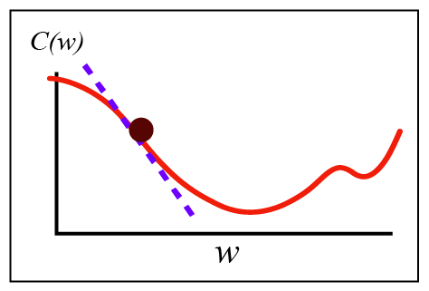
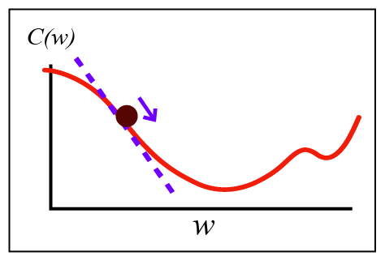
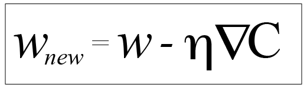

目录
欢迎>
神经网络>
分类问题>
样例>
特征>
训练集>
神经元>
权重与偏置>
激活函数>
活跃值>
输入层与输出层>
隐藏层>
反向传播>
代价函数>
梯度下降法与学习率>
权重更新>
自由尝试>
梯度下降法
神经网络使用一种称为梯度下降法(gradient descent)的算法来调整其权重和偏置以最小化代价

首先，我们找到当前的权重和代价
接下来，我们求出这一点的斜率，或者将其称为梯度(gradient)
为了方便表示，我们把梯度记作
我们的目标是找到最小值，在图中我们可以形象地理解为要向着下坡的方向移动

我们取梯度的相反数 ，把它乘上一个数
乘出来的结果就是我们每次移动的距离
乘上的这个数我们把它叫做学习率(learning rate)，用表示
所以最终，我们更新权重的公式是这样的：

上一步
下一步